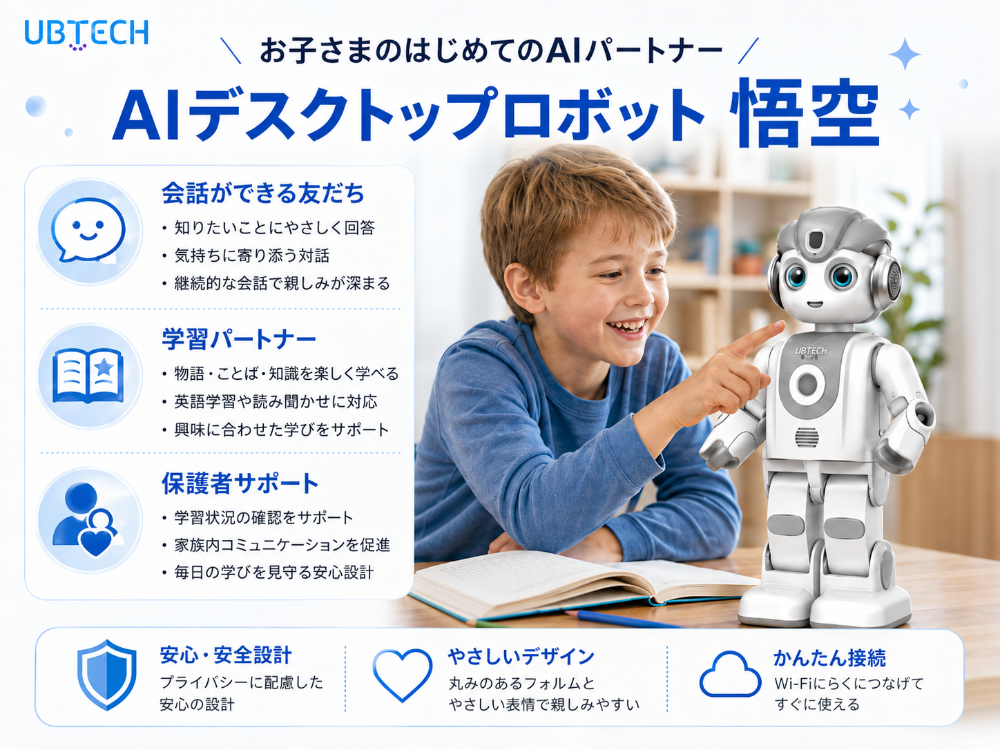

| 企業名 | 国 | 業種 | AI 活用内容・効果 | 出典 |
|---|---|---|---|---|
| Shanghai Longcheer × Agibot G2 | 🇨🇳 | 電子製造 | タブレット工場で人形ロボット4台が精密組立を140時間連続稼働。Q3までに100台に拡張予定。世界初・産業規模の人形ロボット電子製造ライン。 | Forbes（4/15） |
| Meituan × Xiaomei Agent | 🇨🇳 | フード／小売 | 「いつものランチを20分遅らせて注文して」と話すだけで意図を解釈・決済まで自律実行。画面操作ゼロで完結する AI エージェント。HBR が「中国 AI エージェントが示すコマースの未来」として特集。 | HBR（4/16） |
| SoftBank × Oracle「Sarashina」 | 🇯🇵🇺🇸 | 通信／クラウド | SoftBank 自社開発 LLM「Sarashina」を Oracle Alloy インフラ上でクラウドサービスとして提供開始（6月〜）。東日本 DC は4月稼働済み。データが日本国内に留まる主権クラウドとして金融・医療・官公庁向けに展開。 | SoftBank 公式（4/16） |
| NEC × SAP | 🇯🇵🇩🇪 | IT／ERP | SAP S/4HANA + Joule エージェントで AI ネイティブ企業へ転換。新幹線・通信網での最適化ノウハウを ERP に融合。全社業務プロセスの自律化を推進。 | SAP News（4/27） |
